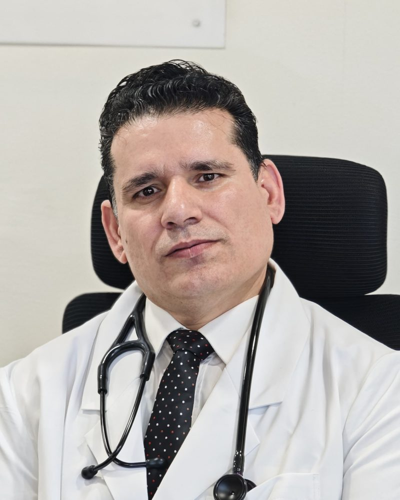

IVUS & rotablation in the private sector
First interventional cardiologist in Jammu & Kashmir to establish intravascular ultrasound (IVUS) and rotational atherectomy (rotablation) technologies in the private sector.

MBBS, MD (Internal Medicine), DM (Cardiology), FSCAI (USA)
Complex & High-Risk PCI · Rotational Atherectomy · IVUS-Guided PCI
Trained at PGIMER Chandigarh & SKIMS · 7.5 years at Narayana Health, Ahmedabad · Metro Heart Institute, Faridabad
Currently: Director, Interventional Cardiology, Paras Hospitals, Srinagar, J&K
Dr Mohd Maqbool Sohil is an interventional cardiologist in India specialising in complex PCI, rotablation (rotational atherectomy) and IVUS-guided angioplasty. He has 12 years of experience, about 10,000 cardiovascular interventions (including ~9,000 coronary angioplasties and ~1,000 non-coronary cardiovascular interventions) and ~20,000 angiographies.
He trained in Internal Medicine at PGIMER Chandigarh and in Cardiology at SKIMS Srinagar, and is a Fellow of the Society for Cardiovascular Angiography and Interventions (FSCAI, 2021). He specialises in complex high-risk indicated PCI (CHIP), rotational atherectomy, left main and bifurcation stenting, chronic total occlusions and intravascular imaging-guided PCI, using a radial-first approach, and is a proctor for Boston Scientific in rotational atherectomy.
His career spans major cardiac centres across India: 7.5 years as Senior Consultant in Interventional Cardiology at Narayana Health, Ahmedabad (one of India’s largest networks of cardiac centres), and a leadership role at Metro Heart Institute, Faridabad (Delhi NCR). He is currently Director of Interventional Cardiology at Paras Hospitals, Srinagar, where he was the first interventional cardiologist in Jammu & Kashmir to establish IVUS and rotational atherectomy in the private sector. He is the author of peer-reviewed publications on rotablation-assisted left main PCI, calcified coronary disease, intracoronary stem-cell therapy and cardiac pacing.
First interventional cardiologist in Jammu & Kashmir to establish intravascular ultrasound (IVUS) and rotational atherectomy (rotablation) technologies in the private sector.
First cardiologist in Jammu & Kashmir to start medical tourism in interventional cardiology.
Paras Hospitals, Srinagar, Jammu & Kashmir
Metro Heart Institute, Faridabad (Delhi NCR)
Narayana Multispeciality Hospital, Ahmedabad (Narayana Health)
Sher-i-Kashmir Institute of Medical Sciences (SKIMS), Srinagar
Postgraduate Institute of Medical Education and Research (PGIMER), Chandigarh
Government Medical College Jammu, University of Jammu
Fellow of the Society for Cardiovascular Angiography and Interventions: fellowship in interventional cardiology conferred by SCAI.
Registered Medical Practitioner, Jammu & Kashmir Medical Council, Reg. No. 8699 (2005); DM Cardiology registered in the Indian Medical Register (NMC).
Vancouver style, most recent first. Links go to the DOI, PubMed or PubMed Central record where one exists.
Paras Hospitals, Srinagar, Kashmir
English, Urdu, Hindi
This website provides professional information only and is not medical advice. In an emergency, go to the nearest hospital emergency department.